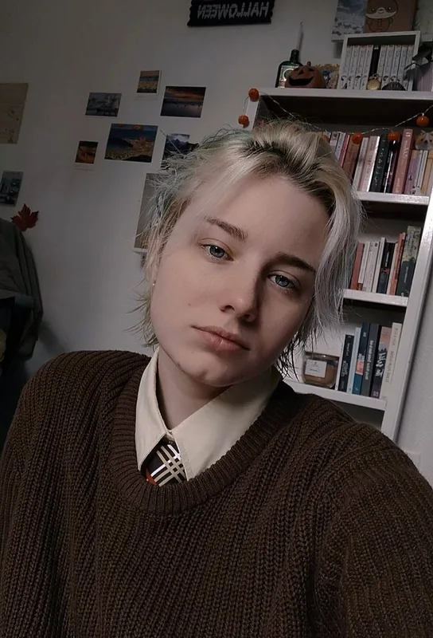
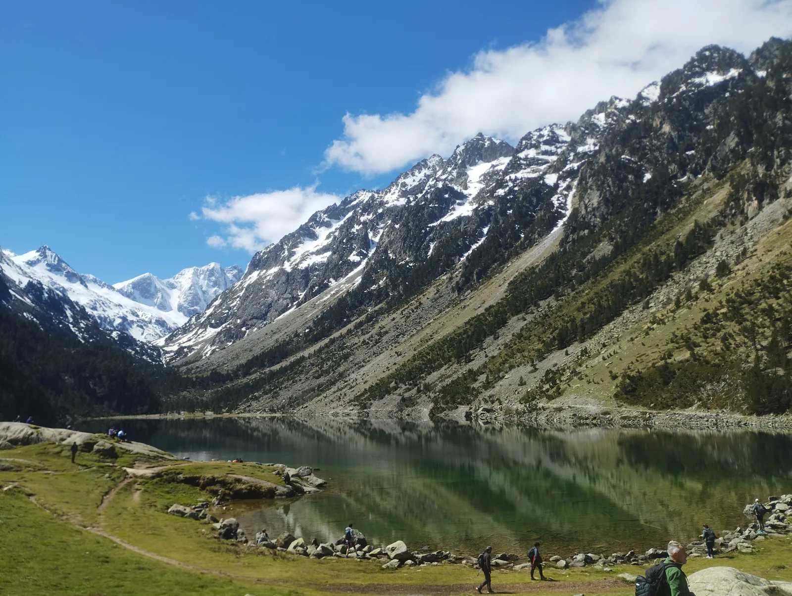
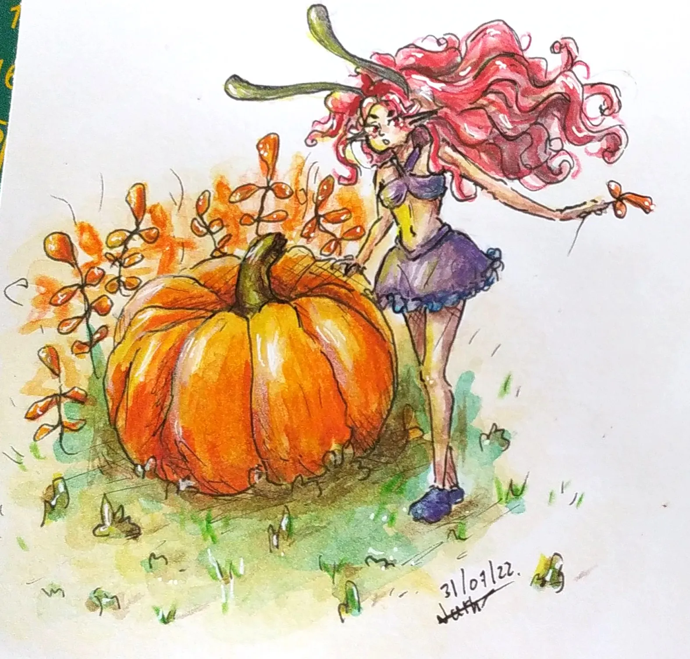

Orianne Decoussemaker
Étudiante en BUT GEA — Parcours GC2F
Bienvenue sur mon portfolio ! Étudiante en gestion des entreprises et des administrations à l'IUT de Tarbes, je vous présente ici mon parcours, mes travaux universitaires et les passions qui nourrissent ma créativité.

Biographie
Mon parcours scolaire et professionnel, et mon CV.

Expérience
Mes expériences professionnelles.

Travaux
Mes SAE, travaux collectifs et projets individuels en BUT GEA.

Loisirs
Animaux, dessin, randonnée et photographie.